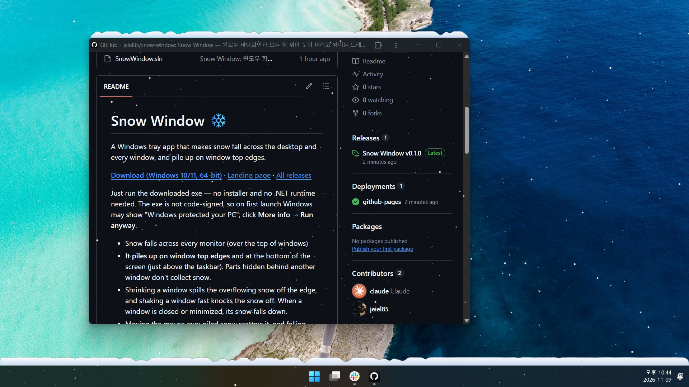

이 창을 흔들어 보세요
제목 표시줄을 잡고 좌우로 빠르게 흔들면 쌓인 눈이 떨어져요. 눈 더미를 마우스로 쓸면 흩날리고, 창을 닫으면 쌓인 눈이 한꺼번에 떨어집니다.
이 페이지의 눈은 앱의 동작을 브라우저에서 따라 만든 데모예요. 실제 앱은 바탕화면 전체에 내립니다.
Snow Window · Windows 10/11용 무료 앱
바탕화면과 열어 둔 모든 창 위에 눈이 내리고, 창 윗변에 소복이 쌓여요. 창을 흔들면 털리고, 마우스로 쓸면 흩날립니다.
제목 표시줄을 잡고 좌우로 빠르게 흔들면 쌓인 눈이 떨어져요. 눈 더미를 마우스로 쓸면 흩날리고, 창을 닫으면 쌓인 눈이 한꺼번에 떨어집니다.
이 페이지의 눈은 앱의 동작을 브라우저에서 따라 만든 데모예요. 실제 앱은 바탕화면 전체에 내립니다.
창을 닫았더니 쌓여 있던 눈이 떨어졌어요.

C# .NET 10으로 만든 트레이 앱이에요. 모니터마다 클릭이 통과하는 투명한 창을 하나씩 띄우고, DirectComposition과 Direct2D로 눈송이를 그립니다. 쌓인 눈은 창마다 3픽셀 칸의 높이로 계산해서 무너지고 넘쳐요.
창 목록은 창이 움직이거나 바뀔 때만 다시 읽고 기본 30fps로 돌아서, 켜 둔 채로 일해도 가벼워요. 소스를 받아 직접 빌드할 수도 있습니다.
dotnet build SnowWindow.sln -c Release
dotnet test SnowWindow.sln